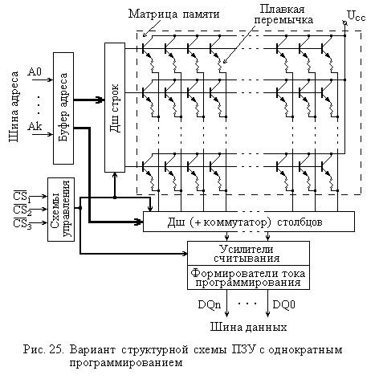

2.4. Постоянные запоминающие устройства
2.4.1. Разновидности постоянных ЗУПостоянные запоминающие устройства (ПЗУ или Read Only Memory - ROM), которые также часто называют энергонезависимыми (или Non Volatile Storage), обеспечивают сохранение записанной в них информации и при отсутствии напряжения питания. Конечно, под такое определение подпадают и память на жестких и гибких дисках, и компакт диски, и некоторые другие виды ЗУ.
Однако, говоря о постоянных ЗУ, обычно подразумевают устройства
памяти с произвольным адресным доступом. Такие ЗУ могут строиться на различных
физических принципах и обладать различными характеристиками не только по емкости
и времени обращения к ним, но и по возможности замены записанной в них информации.
2.4.1. Разновидности постоянных ЗУ
К началу 2000-х годов наибольшее распространение получили полупроводниковые ПЗУ, элементы памяти которых используют различные модификации диодов и транзисторов и изготавливаются по интегральной технологии.
Непосредственными предшественниками таких ЗУ были магнитные (трансформаторные) ПЗУ, информация в которые записывалась соответствующей прокладкой (прошивкой) проводников ферритовых сердечников, что обеспечивало при требовавшихся в то время емкостях высокую надежность этих ЗУ в самых тяжелых (в электромагнитном отношении) условиях.
Известны также емкостные и индуктивные ПЗУ, в которых использовались проводники специальной формы, образующие емкостные или индуктивные связи.
В настоящее время исследуются и другие принципы реализации постоянных ЗУ, в некотором смысле возвращающиеся к магнитным и конденсаторным схемам, но на другом уровне развития технологий.
Запись информации в постоянные ЗУ, как правило, существенно отличается от считывания по способу и времени выполнения. Процесс записи для полупроводниковых постоянных ЗУ получил также название “прожига” или программирования, первое из которых связано со способом записи, сводящимся к разрушению (расплавлению, прожигу) соединительных перемычек в чистом ЗУ.
В полупроводниковых ПЗУ в качестве элементов памяти, точнее, в качестве нелинейных коммутирующих и усилительных элементов обычно используются транзисторы. Они объединены в матрицу, выборка данных из которой производится по строкам и столбцам, соответствующим указанному адресу, так же, как и в других ЗУ с произвольным доступом. Один из возможных вариантов структурной схемы полупроводникового ПЗУ, представлен на рис. 25. Строго говоря, непосредственно запоминание информации в этом ПЗУ осуществляется плавкой перемычкой, а транзисторы выполняют роль ключей-усилителей. Плавкая перемычка может быть изготовлена из нихрома, поликристаллического кремния или других материалов. В зависимости от того, как именно работает усилитель считывания (в режиме повторителя или инвертора), наличие перемычки соответствует записи “1” или “0”. Разрушение перемычки (импульсом сильного тока) приводит к записи значения, обратного исходному.

Различают две большие группы ПЗУ: программируемые изготовителем и программируемые пользователем.
ЗУ первой группы, называемые иначе масочными, обычно выпускаются большими партиями. Информация в них заносится в процессе изготовления этих ЗУ на заводах: с помощью специальной маски в конце технологического цикла на кристалле формируется соответствующая конфигурация соединений. Такие ЗУ оказываются наиболее дешевыми при массовом изготовлении. Их обычно используют для хранения различных постоянных программ и подпрограмм, кодов, физических констант, постоянных коэффициентов и пр.
В ПЗУ, программируемые пользователем, информация записывается после их изготовления самими пользователями. При этом существуют два основных типа таких ЗУ: однократно программируемые и перепрограммируемые.
Нетрудно вспомнить, что аналогичные разновидности имеются и у CDROM, которые, по существу, являются ПЗУ (ROM), изготавливаемыми на основе другого физического принципа.
Наиболее простыми являются однократно программируемые ПЗУ. В этих ЗУ запись как раз и производится посредством разрушения соединительных перемычек между выводами транзисторов и шинами матрицы (хотя есть и несколько иные технологии). Изображение программируемого ПЗУ на функциональной схеме показано на рис. 26.
Перепрограммируемые ПЗУ позволяют производить в них запись информации многократно. Конечно, в таких ЗУ должен использоваться иной принцип, чем разрушение перемычек в процессе записи. Распространенные технологические варианты используют МОП-транзисторы со сложным затвором (составным или “плавающим”), который способен накапливать заряд, снижающий пороговое напряжение отпирания транзистора, и сохранять этот заряд при выключенном питании. Программирование таких ПЗУ и состоит в создании зарядов на затворах тех транзисторов, где должны быть записаны данные (обычно “0”, так как в исходном состоянии в таких микросхемах записаны все “1”).
Перед повторной записью требуется произвести стирание ранее записанной информации. Оно производится либо электрически, подачей напряжения обратной полярности, либо с помощью ультрафиолетового света. У микросхем последнего типа имелось круглое окошечко из кварцевого стекла, через которое и освещался кристалл при стирании.
Параметры постоянных ЗУ соответствуют технологическим нормам
своего времени. В начале 2000-х годов типовые емкости микросхем постоянной памяти
с масочным программированием составляли порядка 32-128 Мбит, а времена обращения
превышали аналогичные показатели оперативной памяти и для различных модификаций
достигали доя 100 нс.
Флэш-память, появившаяся в конце 1980-х годов (Intel), является представителем класса перепрограммируемых постоянных ЗУ с электрическим стиранием. Однако стирание в ней осуществляется сразу целой области ячеек: блока или всей микросхемы. Это обеспечивает более быструю запись информации или, как иначе называют данную процедуру, программирование ЗУ. Для упрощения этой процедуры в микросхему включаются специальные блоки, делающие запись “прозрачной” (подобной записи в обычное ЗУ) для аппаратного и программного окружения.
Флэш-память строится на однотранзисторных элементах памяти (с “плавающим” затвором), что обеспечивает плотность хранения информации даже несколько выше, чем в динамической оперативной памяти. Существуют различные технологии построения базовых элементов флэш-памяти, разработанные ее основными производителями. Эти технологии отличаются количеством слоев, методами стирания и записи данных, а также структурной организацией, что отражается в их названии. Наиболее широко известны NOR и NAND типы флэш-памяти, запоминающие транзисторы в которых подключены к разрядным шинам, соответственно, параллельно и последовательно.
Первый тип имеет относительно большие размеры ячеек и быстрый произвольный доступ (порядка 70 нс), что позволяет выполнять программы непосредственно из этой памяти. Второй тип имеет меньшие размеры ячеек и быстрый последовательный доступ (обеспечивая скорость передачи до 16 Мбайт/с), что более пригодно для построения устройств блочного типа, например “твердотельных дисков”.
Способность сохранять информацию при выключенном питании, малые размеры, высокая надежность и приемлемая цена привели к широкому ее распространению. Этот вид памяти применяется для хранения BIOS, построения так называемых “твердотельных” дисков (memory stick, memory drive и др.), карт памяти различного назначения и т.п. Причем устройства на основе флэш-памяти используются не только в ЭВМ, но и во многих других применениях.
К минусам данного вида памяти можно отнести относительно невысокую скорость передачи данных, средний объем и дороговизну устройств с большой емкостью (свыше 512 Мбайт и более).
Элементы памяти флэш-ЗУ организованы в матрицы, как и в других видах полупроводниковой памяти. Разрядность данных для микросхем составляет 1-2 байта.
Операция чтения из флэш-памяти выполняется как в обычных ЗУ с произвольным доступом (оперативных ЗУ или кэш). Однако запись сохраняет в себе некоторые особенности, аналогичные свойствам постоянных ЗУ.
Перед записью данных в ЗУ ячейки, в которые будет производиться запись, должны быть очищены (стерты). Стирание заключается в переводе элементов памяти в состояние единицы и возможно только сразу для целого блока ячеек (в первых микросхемах предусматривалось стирание только для всей матрицы сразу). Выборочное стирание невозможно.
В процессе записи информации соответствующие элементы памяти переключаются в нулевое состояние. Также, как и в ПЗУ, без стирания можно дозаписать нули в уже запрограммированные ячейки, однако необходимость в такой операции относительно редка.
Фактически при операции записи производится два действия: запись и считывание, но управление этими операциями производится внутренним автоматом и “прозрачно” для процессора.
Разбиение адресного пространства микросхемы флэш-памяти на блоки обычно бывает двух видов: симметричное и асимметричное.
В первом случае, называемом также Flash File, все блоки (стирание в пределах каждого из которых производится только для всего блока сразу) имеют одинаковый размер, например 64 Кбайт или 128 Кбайт. Количество блоков зависит от емкости микросхемы. Например, в микросхеме 28F128J3 (Intel Strata Flash) емкостью 128 Мбит (16 Мбайт) имеется 128 блоков по 128 Кбайт.
В случае асимметричной архитектуры, называемой иначе Boot Block, один из блоков, на которые разбито адресное пространство микросхемы, дополнительно разбивается на меньшие блоки. Например, в микросхеме 28F640C3 (Intel Advanced+ Boot Block) емкостью 64 Мбит выделен один загрузочный (Boot) блок размером 64 Кбайт, разбитый на 8 блоков параметров (parameter blocks) по 8 Кбайт, и 127 основных (main) блоков по 64 Кбайт. Причем загрузочный блок может размещаться либо в начале, либо в конце адресного пространства микросхемы.
Структурная схема флэш-памяти с асимметричной архитектурой приведена
на рис. 27.
В этой схеме управляющий сигнал WP# (Write Protect)
используется для исключения возможности случайной записи по командам программы,
а сигнал RP# (Reset/Deep Power Down) также
применяется для управления записью, закрывая все блоки для записи при единичном
уровне. Остальные управляющие сигналы аналогичны одноименным сигналам в других
типах памяти. На вход VPP подается напряжение,
необходимое для ускорения операций стирания и записи данных.
Флэш-память используется для различных целей. Непосредственно в самой ЭВМ эту память применяют для хранения BIOS (базовой системы ввода-вывода), что позволяет при необходимости производить обновление последней, прямо на рабочей машине. (Надо отметить, что без особой необходимости и при отсутствии соответствующего опыта, производить такие операции не рекомендуется.)
Другим применением флэш-памяти, получившим достаточно широкое распространение, являются так называемые “твердотельные диски” (solid-state disks), эмулирующие работу внешних винчестеров. Такое устройство имеет габариты порядка 70×20×10 мм, подключается обычно к шине USB и состоит из собственно флэш-памяти, эмулятора контроллера дисковода и контроллера шины USB. При включении его в систему (допускается “горячее” подключение и отключение) устройство с точки зрения пользователя ведет себя как обычный (съемный) жесткий диск. Конечно, производительность его меньше, чем у жесткого диска: скорость передачи при записи и чтении составляет менее одного мегабайта в секунду. Емкость таких “дисков” находится в пределах от 32 до 512 Мбайт (на начало 2003 г.).
Более общее применение флэш-память находит в различных модификациях карт памяти, которые используются не только в компьютерах разных классов, но и в цифровых видео- и фотокамерах, плеерах, телефонах, музыкальных центрах и другой медиатехнике. Причем такая карта может также быть и сменной картой в твердотельном диске.